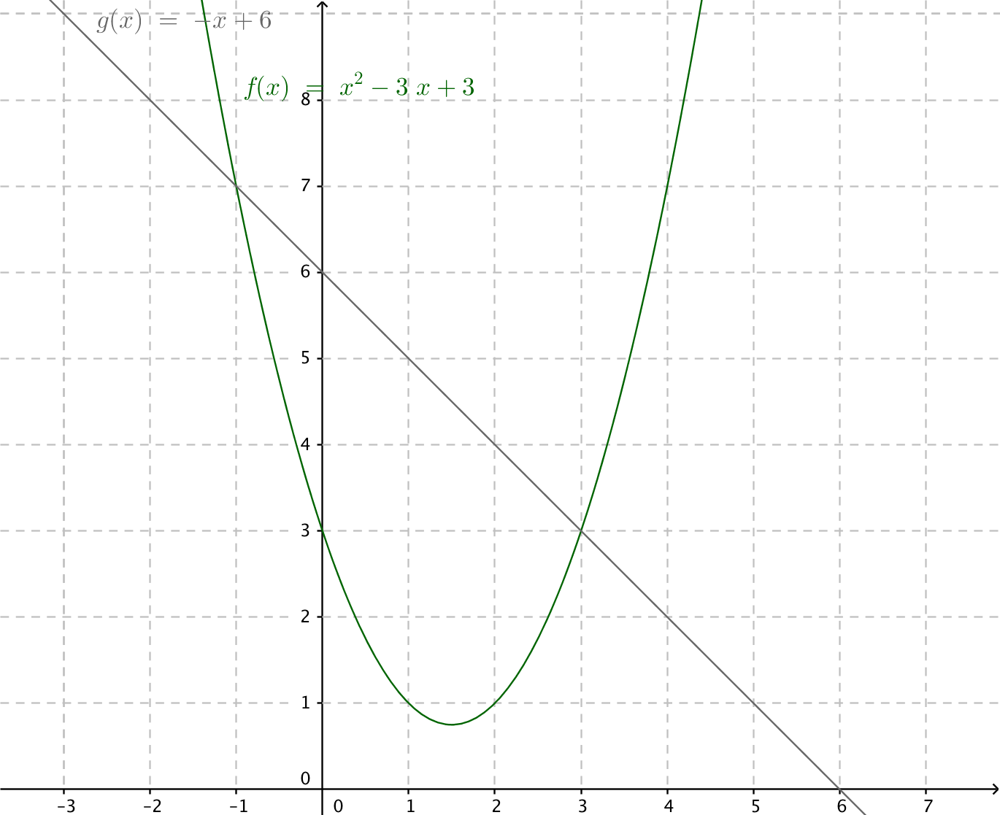
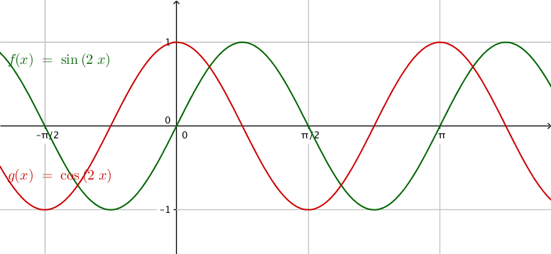

10. Arean mellan två funktioner
Bestäm arean som bildas mellan \( f(x)=x^2-3x+3 \) och \( g(x)=-x+6 \).
Lösning
Området som bildas är skillnaden mellan \( \displaystyle\int -x+6 \mathrm{ d}x \) och \( \displaystyle\int x^2-3x+3\mathrm{ d}x \).

Vi behöver skärningspunkterna,
\( \begin{array}{rcl} f(x) & = & g(x) \\ x^2-3x+3 & = & -x+6 \\ x^2 -2x-3 & = & 0 \\ x & = & \dfrac{2\pm \sqrt{(-2)^2-4\cdot 1 (-3)}}{2\cdot 1} \\ x & = & \dfrac{2\pm 4}{2}\\ \end{array} \)
Skärningspunkterna är \( x=-1 \) och \( x=3 \).
Arean är
\( \begin{array}{rcl} \displaystyle\int_{-1}^3 -x+6 \mathrm{ d}x -\displaystyle\int_{-1}^3 x^2-3x+3 \mathrm{ d}x & = & \displaystyle\int_{-1}^3 -x+6 -(x^2-3x+3) \mathrm{ d}x\\ & = & \displaystyle\int_{-1}^3 -x^2+2x+3 \mathrm{ d}x \\ & = & \bigg/_{-1}^3 -\dfrac{1}{3}x^3+x^2+3x \\ & = & (-\dfrac{1}{3}\cdot 3^3+3^2+3\cdot 3)- (-\dfrac{1}{3}\cdot (-1)^3+(-1)^2+3\cdot (-1))\\ & = & 9-(-1\dfrac{2}{3}) = 10\dfrac{2}{3}\\ \end{array} \)
Då vi bestämmer arean mellan två funktioner, \( f(x) \) och \( g(x) \) i intervallet \( [a,b] \) där \( f(x) > g(x) \) räknar vi som \( A=\displaystyle\int_a^b f(x)-g(x) \mathrm{ d}x \).
Om det är så att en del av den gemensamma arean blir under \( x \)-axeln kan vi flytta funktionerna uppåt genom att addera till ett \( n \).
Storleken av arean ändras inte genom att vi flyttar funktionerna uppåt. Vi får då att \( \displaystyle\int_a^b (f(x)+n)-(g(x)+n) \mathrm{ d}x = \displaystyle\int_a^b f(x)+n -g(x)-n \mathrm{ d} x = \displaystyle\int_a^b f(x)-g(x) \mathrm{ d} x \).
Exempel 1 Mellan \( f(x)=\sin 2x \) och \( g(x)=\cos 2x \) uppstår oändligt många areor. Bestäm storleken av en area.
Lösning
Funktionerna beter sig som följande:

Först söker vi skärningspunkterna,
\( \begin{array}{rcll} \sin 2x & = & \cos 2x & | /\cos2x\not=0 \\ \dfrac{\sin 2x}{\cos 2x} & = & 1 \\ \tan 2x & = & 1\\ 2x & = & \dfrac{\pi}{4} + n\cdot \pi\\ x & = & \dfrac{\pi}{8} + n\cdot \dfrac{\pi}{2}, n\in \mathbf{Z}\\ \end{array} \)
En area bildas mellan skärningspunkterna \( \dfrac{\pi}{8} \) och \( \dfrac{\pi}{8} + 1 \cdot \dfrac{\pi}{2} = \dfrac{5\pi}{8} \).
Arean är
\( \begin{array}{rcl} \displaystyle\int_{\dfrac{\pi}{8}}^{\frac{5\pi}{8}} \sin 2x - \cos 2x \mathrm{ d} x & = & \displaystyle\int_{\dfrac{\pi}{8}}^{\frac{5\pi}{8}} \dfrac{1}{2}\cdot 2\sin 2x - \dfrac{1}{2}\cdot 2\cos 2x \mathrm{ d} x \\ & = & \dfrac{1}{2}\displaystyle\int_{\dfrac{\pi}{8}}^{\frac{5\pi}{8}} 2\sin 2x - 2\cos 2x \mathrm{ d} x \\ & = & \dfrac{1}{2}\bigg/_{\dfrac{\pi}{8}}^{\frac{5\pi}{8}} -\cos2x -\sin 2x \\ & = & -\dfrac{1}{2}\bigg/_{\dfrac{\pi}{8}}^{\frac{5\pi}{8}} \cos2x +\sin 2x \\ & = & -\dfrac{1}{2}[ (\cos 2\cdot \dfrac{5\pi}{8} + \sin 2\cdot\dfrac{5\pi}{8})-(\cos 2\cdot \dfrac{\pi}{8} + \sin 2\cdot\dfrac{\pi}{8})] \\ & = & -\dfrac{1}{2}[(-\dfrac{1}{\sqrt{2}}-\dfrac{1}{\sqrt{2}})-(\dfrac{1}{\sqrt{2}}+\dfrac{1}{\sqrt{2}})] \\ & = & -\dfrac{1}{2}(-\dfrac{2}{\sqrt{2}}-\dfrac{2}{\sqrt{2}})\\ & = & -\dfrac{1}{2}\cdot (-\dfrac{4}{\sqrt{2}}) \\ & = & \dfrac{2}{\sqrt{2}} = \sqrt{2} \approx 1,41 \\ \end{array} \)
Uppgifter
- Bestäm storleken av arean som uppstår mellan \( f(x)=-x^2+5x+1 \) och \( g(x)=2x+1 \) i intervallet \( [1,3] \).
Vi får \( \displaystyle\int_1^3 -x^2+5x+1-(2x+1) \mathrm{ d} x = \displaystyle\int_1^3 -x^2+3x+2 \mathrm{ d}x = \bigg/_1^3 -\dfrac{1}{3}x^3+\dfrac{3}{2}x^2+2x = 3\dfrac{1}{3} \) a.e.
- Bestäm storleken av arean som uppstår mellan \( f(x)=-x^2+5x \) och \( g(x)=-x+5 \).
Skärningspunkterna är 1 och 5. Arean är \( \displaystyle\int_1^5 -x^2+5x-(-x+5) \mathrm{ d} x= \displaystyle\int_1^5 -x^2 +6x -5 \mathrm{ d} x = \bigg/_1^5 -\dfrac{1}{3}x^3+3x^2-5x = 10\dfrac{2}{3} \) a.e.
- Bestäm storleken av arean som uppstår mellan \( f(x)=-x^2+2x+4 \) och \( g(x)=x^2-4x+4 \).
Skärningspunkterna är 0 och 3 (bestäm dem!). Arean är \( \displaystyle\int_0^3 -x+2x+4 -(x^2-4x+4) \mathrm{ d}x = \displaystyle\int_0^3 -2x^2+6x \mathrm{ d}x = \bigg/_0^3 -\dfrac{2}{3}x^3+3x^2 = 9 \) a.e.
- Bestäm storleken av arean som uppstår mellan \( y=e^{-x} \), \( y=e^{\frac{x}{2}} \) och \( x=3 \).
Börja med att rita upp situationen!
Skärningspunkten för \( e^{-x} \) och \( e^{\frac{x}{2}} \) är \( x=0 \).
Storleken av arean är \( \displaystyle\int_0^3 e^{\frac{x}{2}}-e^{-x} \mathrm{ d}x = \bigg/_0^3 2e^{\frac{x}{2}} -(-e^{-x}) =2e^\dfrac{3}{e}+\dfrac{1}{e^3}-3\approx 3,1 \) a.e.
- Bestäm storleken av arean som uppstår mellan \( f(x)=-x+3 \) och \( g(x)=\dfrac{1}{x} \).
Denna uppgift löser du lättast på räknare. Du märker snart varför.
Skärningspunkterna är \( f(x)=g(x) \Leftrightarrow x=\dfrac{3\pm\sqrt{5}}{2} \).
Arean är \( \displaystyle\int_{\dfrac{3-\sqrt{5}}{2}}^{\frac{3+\sqrt{5}}{2}} -x+3-\dfrac{1}{x} \mathrm{ d}x =\bigg/_{\dfrac{3-\sqrt{5}}{2}}^{\frac{3+\sqrt{5}}{2}} -\dfrac{1}{2}x^2+3x-\ln x \approx 1,43 \).
- För vilket värde på konstanten \( a \) gäller att det området som bestäms av \( f(x)=ax \) och \( g(x)=x^2 \) har värdet 36?
Skärningspunkten mellan \( f \) och \( g \) är
\( \begin{array}{rcl} ax & = & x^2 \\ x^2-ax & = & 0 \\ x(x-a) & = & 0\\ \end{array} \)
Alltså \( x=0 \) och \( x=a \).
Vi får att för arean gäller
\( \begin{array}{rcl} \displaystyle\int_0^a ax-x^2 \mathrm{ d}x & = & 36 \\ \bigg/_0^a \dfrac{a}{2}x^2-\dfrac{1}{3}x^3 & = & 36 \\ (\dfrac{a^3}{a}-\dfrac{a^3}{3})-(\dfrac{a}{2}\cdot 0^2-\dfrac{1}{3}\cdot 0^3) & = & 36 \\ \dfrac{a^3}{6}-0 & = & 36 \\ a & = & \sqrt[3]{3\cdot 36} = 6\\ \end{array} \)
Eftersom funktionerna är symmetriska kring \( x \)-axeln gäller att \( a=\pm 6 \).
- Bestäm storleken av området som bildas mellan \( y=x^2 \), tangenten för \( y=x^2 \) i punkten \( (1,1) \) och \( y \)-axeln.
Tangenten för \( f(x)=x^2 \) i punkten \( 1 \) har riktningskoefficienten \( f'(1) = 2\cdot 1 = 2 \). Tangentens ekvation är \( y-y_0 = k(x-x_0) \Leftrightarrow y=2x-1 \).
Skärningspunkten för \( f(x)=x^2 \) och \( y=2x-1 \) är \( x^2=2x-1 \Leftrightarrow x=1 \).
För att bestämma arean integrerar vi från \( x=0 \) till \( x=1 \). Arean är \( \displaystyle\int_0^1 x^2-(2x-1) \mathrm{ d}x = \displaystyle\int_0^1 x^2-2x+1 \mathrm{ d} x = \bigg/_0^1 \dfrac{1}{3}x^3-x^2+x =(\dfrac{1}{3}\cdot 1^3-1^2+1)-(\dfrac{1}{3}\cdot 0^3-0^2+0) = \dfrac{1}{3} \) a.e.
- Ett område bestäms av \( f(x)=\dfrac{1}{x^2} \), \( g(x)=\dfrac{1}{x^3} \) och linjerna \( x=a \) och \( x=2a \) där \( a > 0 \). För vilket värde på \( a \) har området ett så stort värde som möjligt?
Linjerna utgör gränserna. Så arean är \( \displaystyle\int_a^{2a} \dfrac{1}{x^2} -\dfrac{1}{x^3} \mathrm{ d}x =\bigg/_a^{2a} \dfrac{1}{-1}x^{-1} -\dfrac{1}{-2}x^{-2}= \bigg/_a^{2a} -\dfrac{1}{x}+\dfrac{1}{2x^2} = -\dfrac{1}{2a}+\dfrac{1}{2(2a)^2}-(-\dfrac{1}{a}+\dfrac{1}{2\cdot a^2}) = \dfrac{1}{2a}-\dfrac{3}{8a^2} \).
Det vad vi har är en funktion som ger arean. Vi betecknar den \( A(a)=\dfrac{1}{2a}-\dfrac{3}{8a^2} \). För att bestämma största värde undersöker vi funktionen. \( A'(a)=-\dfrac{1}{2a^2}+\dfrac{3}{4a^3} \). \( A'(a)=0 \) då \( a=\dfrac{3}{2} \).
Då \( A'(1)= \dfrac{1}{4} > 0 \) och \( A'(2)=-\dfrac{1}{32} < 0 \) är \( a=\dfrac{3}{2} \) ett maximum.